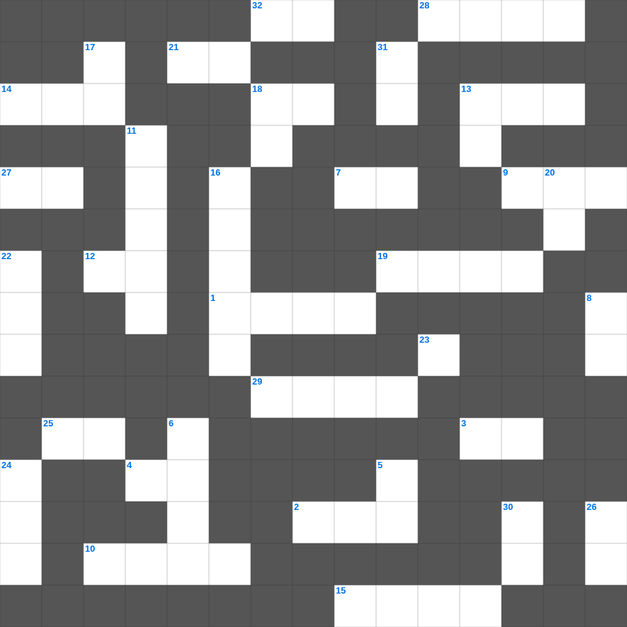

성도의 의무
📌 서비스 정의
십자가로세로는 교회 주보와 주일학교에서 사용할 수 있는 성경 기반 가로세로 퍼즐 서비스입니다. 성경 인물, 사건, 핵심 구절을 바탕으로 제작되었습니다. 온라인 풀이 및 인쇄 기능을 제공합니다.
성도의의 말씀을 퀴즈로 배우는 성도의 성경공부 자료입니다. 가로 힌트와 세로 힌트를 보고 35개의 단어를 맞춰보세요. 인쇄도 가능하고 정답 확인도 바로 되니 소그룹 모임이나 가정 예배 시간에도 활용하실 수 있습니다.

📝 가로 힌트
1. 노아의 방주가 머문 산
2. 부지중에 지은 죄를 속하기 위한 제사
3. 등불을 들고 신랑을 기다리는 열 명의 이것
4. 내가 곧 길이요 이것이요 생명이니
7. 예수님은 우리의 영원한 이것(길, 진리, 이것)
9. 구원의 이것과 성령의 검
10. 모세가 홍해를 가르고 마른 땅처럼 건넌 일
12. 광야에서 하늘에서 내려온 양식
13. 매주 교체하는 거룩한 떡
14. 가나 혼인잔치에서 물이 이것이 된 기적
15. 하나님이 만드신 최초의 낙원
18. 혼인 잔치에 이것을 입지 않은 사람
19. 우리의 신앙 고백이 담긴 기도문
20. 예수님이 태어나 뉘이셨던 곳
21. 요셉이 형들에 의해 팔려간 나라
25. 기드온의 300 용사가 든 것: 항아리와 이것
27. 예수님이 부활 후 고기를 구우신 숯불
28. 쉬지 말고 이것하라
29. 아브라함이 이삭을 번제로 드리려 한 산
32. 선한 이것은 양들을 위하여 목숨을 버리거니와
📝 세로 힌트
5. 곡식으로 드리는 제사
6. 기름 부음 받은 자
8. 광야에서 이스라엘이 먹은 하늘 양식
11. 예수님이 저주하여 마른 나무
13. 하나님은 영이시니 예배하는 자가 신령과 이것으로
16. 강도를 만난 자의 진정한 이웃
17. 극히 값진 이것 하나
18. 하나님의 뜻을 전달하는 것
20. 어려운 이웃을 돕는 일
22. 일곱 가지가 달린 성막의 등잔대
23. 공의를 마르지 않는 이것 같이 흐르게 하라
24. 노아의 방주에 비가 내린 일수
26. 마지막 재앙: 처음 난 것들의 이것
30. 야곱의 아들 수
31. 집을 나가 방탕하게 살다 돌아온 아들
🧑🏫 교회 교육 자료 활용
이 퍼즐은 주일학교 교재 추천 자료로 활용할 수 있고, 주일학교 주보에 넣기 좋은 분량으로 구성되어 있습니다. 수업용 주일학교 교안에 활동지로 붙이거나, 예배 후 복습용 주일학교 공과교재로 바로 사용할 수 있습니다.
🏷️ 키워드
성도의 성경공부 자료, 성도의, 십자가로세로, 성경퀴즈, 말씀퀴즈, 가로세로퍼즐, 주일학교 교재 추천, 주일학교 주보, 주일학교 교안, 주일학교 공과교재